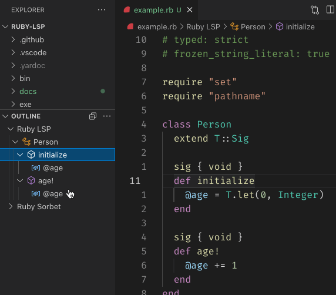

Class: RubyLsp::Requests::DocumentSymbol
- Inherits:
-
BaseRequest
- Object
- SyntaxTree::Visitor
- BaseRequest
- RubyLsp::Requests::DocumentSymbol
show all
- Extended by:
- T::Sig
- Defined in:
- lib/ruby_lsp/requests/document_symbol.rb
Overview

The document symbol request informs the editor of all the important symbols, such as classes, variables, and methods, defined in a file. With this information, the editor can populate breadcrumbs, file outline and allow for fuzzy symbol searches.
In VS Code, fuzzy symbol search can be accessed by opened the command palette and inserting an @ symbol.
Example
class Person attr_reader :age
def initialize
@age = 0 end
def age end
end
Defined Under Namespace
Classes: SymbolHierarchyRoot
Constant Summary
collapse
- SYMBOL_KIND =
T.let({
file: 1,
module: 2,
namespace: 3,
package: 4,
class: 5,
method: 6,
property: 7,
field: 8,
constructor: 9,
enum: 10,
interface: 11,
function: 12,
variable: 13,
constant: 14,
string: 15,
number: 16,
boolean: 17,
array: 18,
object: 19,
key: 20,
null: 21,
enummember: 22,
struct: 23,
event: 24,
operator: 25,
typeparameter: 26,
}.freeze, T::Hash[Symbol, Integer])- ATTR_ACCESSORS =
T.let(["attr_reader", "attr_writer", "attr_accessor"].freeze, T::Array[String])
Instance Method Summary
collapse
Methods inherited from BaseRequest
#range_from_syntax_tree_node
Constructor Details
Returns a new instance of DocumentSymbol.
Instance Method Details
#run ⇒ Object
87
88
89
90
|
# File 'lib/ruby_lsp/requests/document_symbol.rb', line 87
def run
visit(@document.tree)
@root.children
end
|
#visit_class(node) ⇒ Object
93
94
95
96
97
98
99
100
101
102
103
104
|
# File 'lib/ruby_lsp/requests/document_symbol.rb', line 93
def visit_class(node)
symbol = create_document_symbol(
name: fully_qualified_name(node),
kind: :class,
range_node: node,
selection_range_node: node.constant
)
@stack << symbol
visit(node.bodystmt)
@stack.pop
end
|
#visit_command(node) ⇒ Object
107
108
109
110
111
112
113
114
115
116
117
118
119
120
|
# File 'lib/ruby_lsp/requests/document_symbol.rb', line 107
def visit_command(node)
return unless ATTR_ACCESSORS.include?(node.message.value)
node.arguments.parts.each do |argument|
next unless argument.is_a?(SyntaxTree::SymbolLiteral)
create_document_symbol(
name: argument.value.value,
kind: :field,
range_node: argument,
selection_range_node: argument.value
)
end
end
|
#visit_const_path_field(node) ⇒ Object
123
124
125
126
127
128
129
130
|
# File 'lib/ruby_lsp/requests/document_symbol.rb', line 123
def visit_const_path_field(node)
create_document_symbol(
name: node.constant.value,
kind: :constant,
range_node: node,
selection_range_node: node.constant
)
end
|
#visit_def(node) ⇒ Object
133
134
135
136
137
138
139
140
141
142
143
144
145
146
|
# File 'lib/ruby_lsp/requests/document_symbol.rb', line 133
def visit_def(node)
name = node.name.value
symbol = create_document_symbol(
name: name,
kind: name == "initialize" ? :constructor : :method,
range_node: node,
selection_range_node: node.name
)
@stack << symbol
visit(node.bodystmt)
@stack.pop
end
|
#visit_def_endless(node) ⇒ Object
149
150
151
152
153
154
155
156
157
158
159
160
161
162
|
# File 'lib/ruby_lsp/requests/document_symbol.rb', line 149
def visit_def_endless(node)
name = node.name.value
symbol = create_document_symbol(
name: name,
kind: name == "initialize" ? :constructor : :method,
range_node: node,
selection_range_node: node.name
)
@stack << symbol
visit(node.statement)
@stack.pop
end
|
#visit_defs(node) ⇒ Object
165
166
167
168
169
170
171
172
173
174
175
176
|
# File 'lib/ruby_lsp/requests/document_symbol.rb', line 165
def visit_defs(node)
symbol = create_document_symbol(
name: "self.#{node.name.value}",
kind: :method,
range_node: node,
selection_range_node: node.name
)
@stack << symbol
visit(node.bodystmt)
@stack.pop
end
|
#visit_module(node) ⇒ Object
179
180
181
182
183
184
185
186
187
188
189
190
|
# File 'lib/ruby_lsp/requests/document_symbol.rb', line 179
def visit_module(node)
symbol = create_document_symbol(
name: fully_qualified_name(node),
kind: :module,
range_node: node,
selection_range_node: node.constant
)
@stack << symbol
visit(node.bodystmt)
@stack.pop
end
|
#visit_top_const_field(node) ⇒ Object
193
194
195
196
197
198
199
200
|
# File 'lib/ruby_lsp/requests/document_symbol.rb', line 193
def visit_top_const_field(node)
create_document_symbol(
name: node.constant.value,
kind: :constant,
range_node: node,
selection_range_node: node.constant
)
end
|
#visit_var_field(node) ⇒ Object
203
204
205
206
207
208
209
210
211
212
213
214
215
216
217
218
219
|
# File 'lib/ruby_lsp/requests/document_symbol.rb', line 203
def visit_var_field(node)
kind = case node.value
when SyntaxTree::Const
:constant
when SyntaxTree::CVar, SyntaxTree::IVar
:variable
else
return
end
create_document_symbol(
name: node.value.value,
kind: kind,
range_node: node,
selection_range_node: node.value
)
end
|